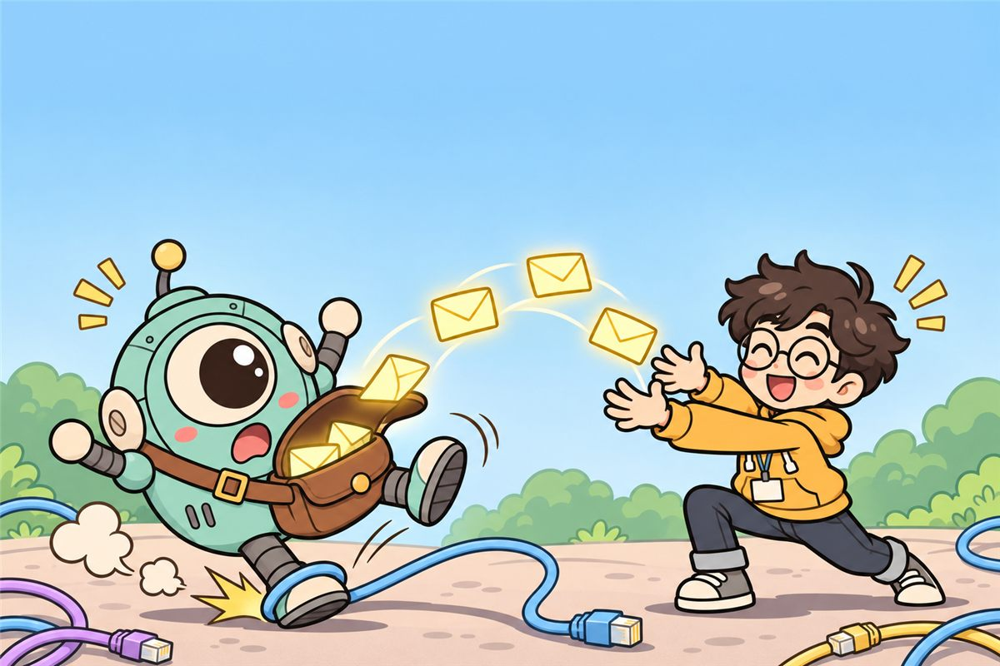
클럼지의 서툰 배달
만화로 보는 clumsyclumsy는 내 PC를 오가는 진짜 네트워크 패킷을 일부러 늦게 보내고, 떨어뜨리고, 뒤섞어서 지하철이나 엘리베이터, 혼잡한 와이파이 같은 나쁜 네트워크를 책상 위에서 재현하는 도구입니다. 게임 개발자 지우와 서툰 배달 로봇 클럼지를 따라가며 무엇을 하는 도구인지, 어떻게 쓰는지 알아봅시다.
내 자리에선 멀쩡했는데
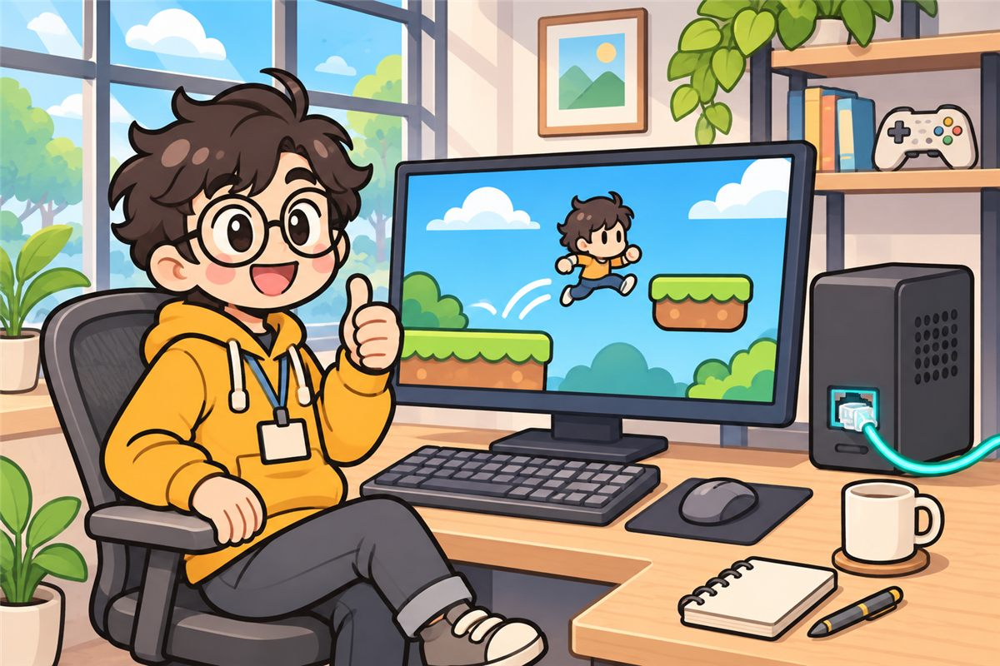
게임 개발자 지우. 빵빵한 사내 회선에서 출시 전 마지막 테스트를 하는 중.
지우끊김 없음, 랙 없음. 완벽해! 출시하자!
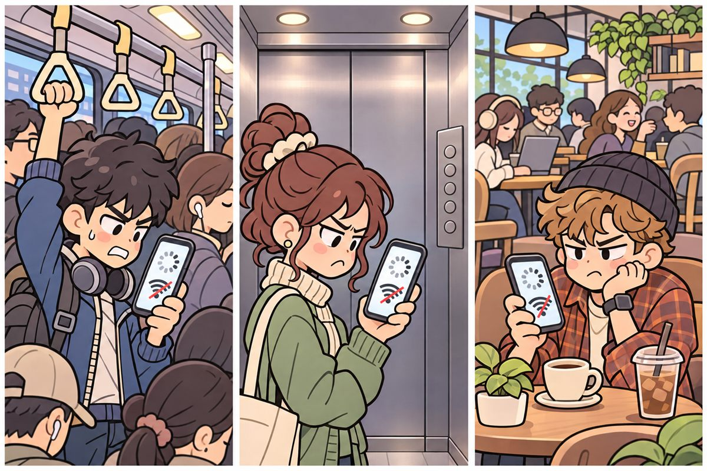
출시 다음 날. 지하철에서, 엘리베이터에서, 붐비는 카페 와이파이에서…
플레이어 1지하철만 타면 자꾸 튕겨요. ★☆☆☆☆
플레이어 2엘리베이터 나오니까 캐릭터가 순간이동했어요!
플레이어 3결제 버튼 눌렀는데 그대로 멈췄어요…
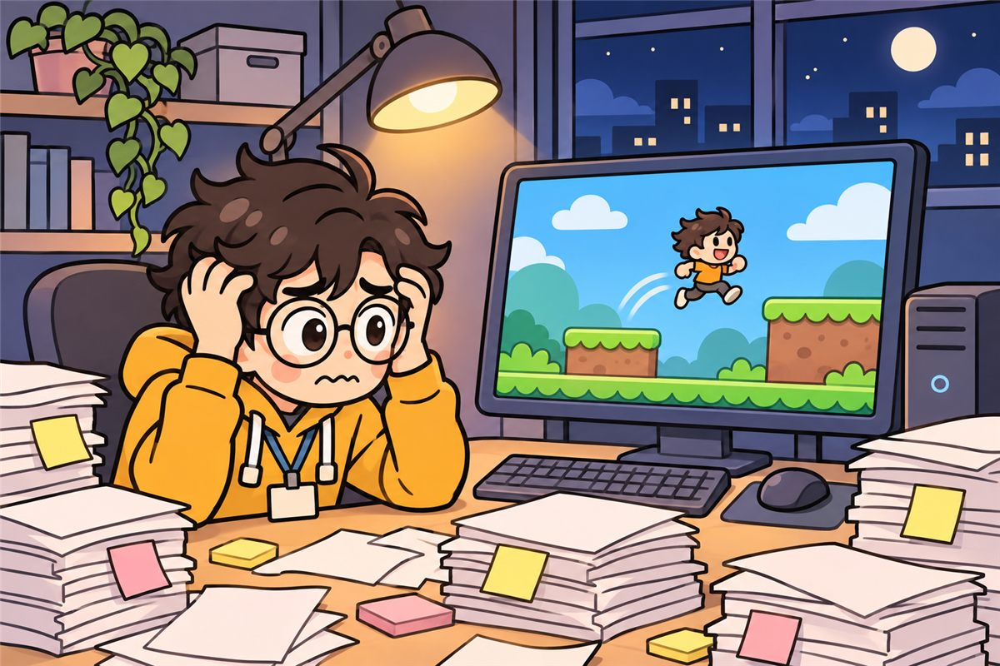
지우내 자리에선 재현이 안 돼… 지하철 타고 다니면서 디버깅할 수도 없고.
문제는 코드 자체가 아니라, 나쁜 네트워크에서만 드러나는 버그였다.
서툰 배달부 등장
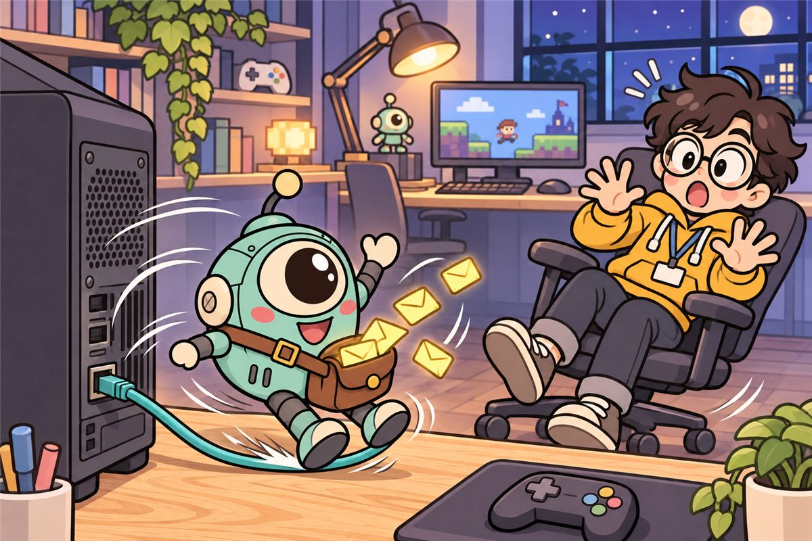
지우으악! 누, 누구세요?!
클럼지안녕! 나는 clumsy야. 네 PC의 네트워크를 일부러 '서툴게' 만들어 줄게. 지하철 속 그 끔찍한 회선을 여기서 그대로 겪게 해 주지!
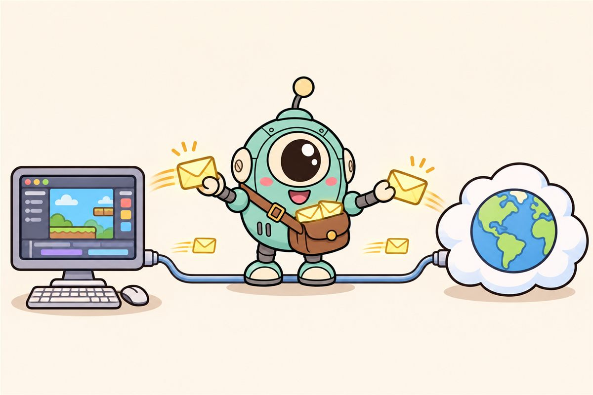
클럼지나는 앱과 네트워크 사이에 서서 진짜 패킷을 하나하나 붙잡아. 그리고 늦게 보내거나, 떨어뜨리거나, 순서를 섞어서 넘겨주지.
지우그럼 게임 코드를 고치거나 프록시를 설정할 필요가 없는 거야?
클럼지맞아. 너는 평소처럼 게임을 켜기만 하면 돼.
어떻게 가로채나요?
Windows에서는 WinDivert 드라이버, Linux에서는 NFQUEUE로 운영체제 수준에서 패킷을 붙잡습니다.
그래서 Windows는 관리자 권한 콘솔, Linux는 sudo(또는 CAP_NET_ADMIN)가 필요합니다.
GUI 창은 없습니다. 콘솔 로그와 웹 대시보드, REST API로 다룹니다.
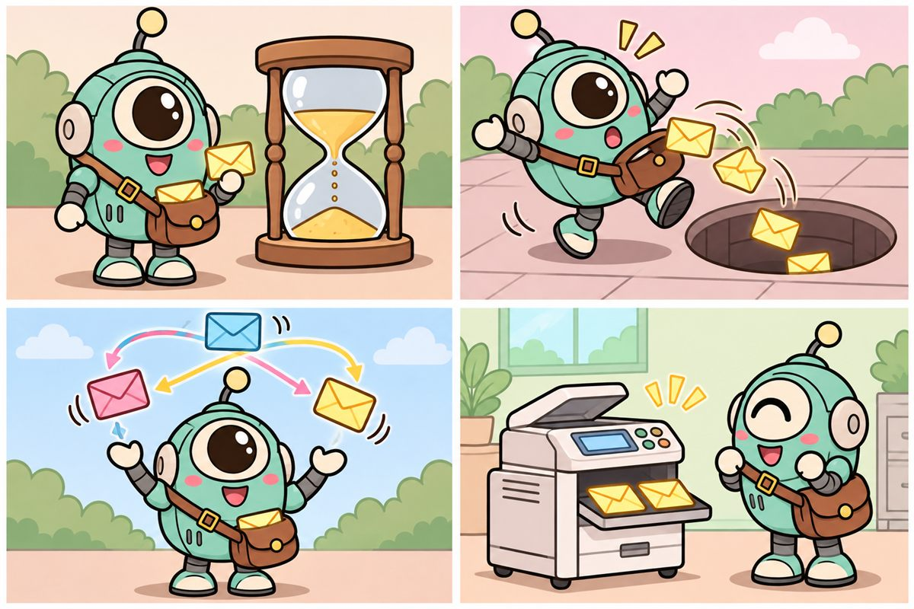
클럼지내 특기를 보여줄게! 이 특기 하나하나를 모듈이라고 불러.
lag모든 패킷에 고정 지연(ms)을 더합니다.drop · burstloss확률로 패킷을 버립니다. burstloss는 손실이 한꺼번에 몰려옵니다.ood패킷이 보낸 순서와 다르게 도착합니다.duplicate같은 패킷을 여러 장 복제해 보냅니다.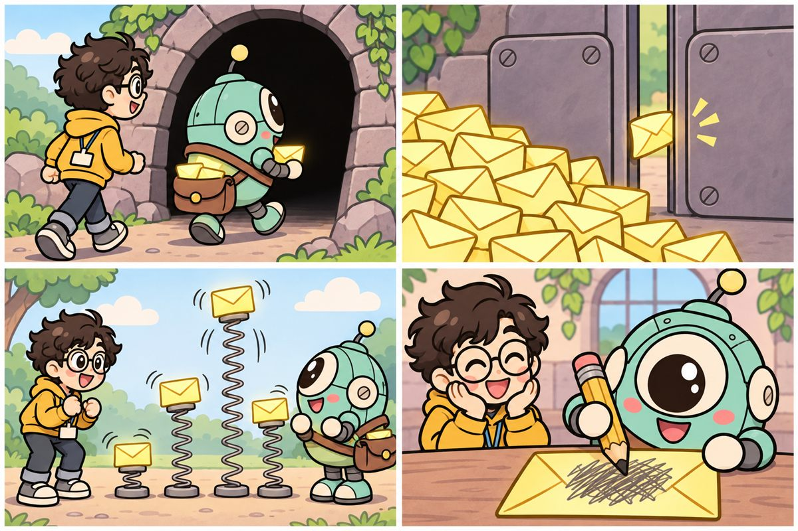
blackout몇 초간 통신이 완전히 끊기기를 주기적으로 반복합니다.bandwidth초당 보낼 수 있는 양(KB/s)을 제한합니다.jitter지연이 패킷마다 최소~최대 사이에서 흔들립니다.tamper · corrupt페이로드를 바꾸거나 비트를 뒤집어 데이터를 망가뜨립니다.그 밖에 잠깐 붙잡았다 한꺼번에 내보내는 throttle, TCP 연결을 강제로 끊는 reset까지 모두 12가지입니다.
여러 모듈을 동시에 켜면 겹쳐서 적용됩니다. 전체 목록과 범위·기본값은 clumsy --help가 알려줍니다.
직접 써 보자
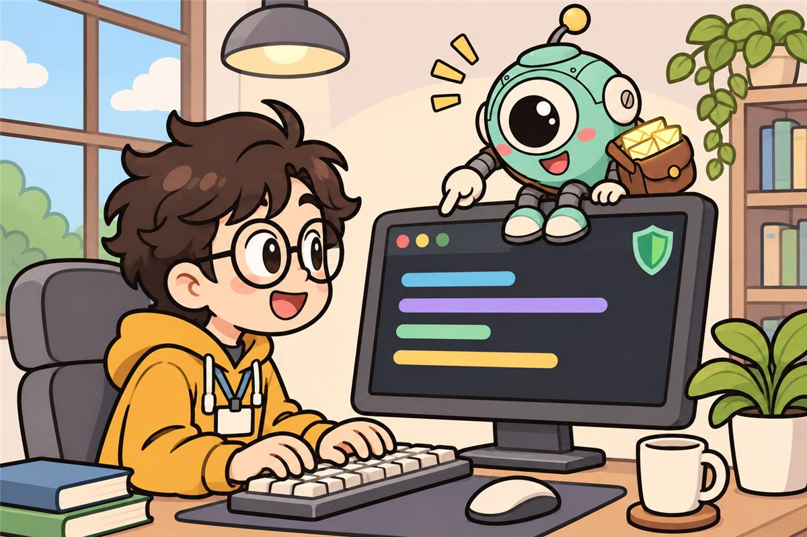
클럼지관리자 권한으로 연 콘솔에서 이렇게 입력해 봐.
clumsy.exe --filter "udp and (udp.DstPort == 7777 or udp.SrcPort == 7777)" ^
--lag on --lag-time 150 --drop on --drop-chance 5 --timeout 60지우7777번 포트 게임 통신에 150ms 지연, 5% 손실… 그리고 60초 뒤엔 알아서 꺼지는 거지?
클럼지응! --timeout은 안전벨트야. 나를 깜빡 잊어도 네 네트워크가 계속 망가져 있진 않아.
자주 하는 실수
- 모듈은 켜고(on) 값도 줘야 합니다.
--lag-time 150만 쓰면 꺼진 모듈에 값만 들어갑니다. - 확률은 0~100 퍼센트입니다.
--drop-chance 5는 5%입니다. - 필터를 주지 않으면 아무것도 바뀌지 않습니다. 캡처는 필터가 있어야 시작됩니다.
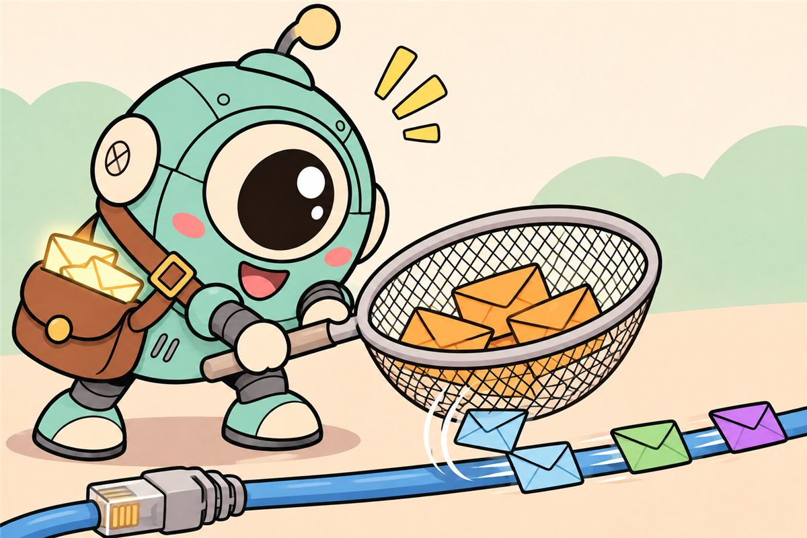
클럼지필터는 '어떤 편지만 건드릴지' 고르는 체야. 걸리지 않은 편지는 아무 일 없이 지나가.
필터 예시
# UDP 7777 포트의 양방향
udp and (udp.DstPort == 7777 or udp.SrcPort == 7777)
# 서버 하나(10.0.0.5)와 주고받는 모든 패킷
ip.DstAddr == 10.0.0.5 or ip.SrcAddr == 10.0.0.5
# 내 PC 안(localhost)끼리의 통신
outbound and loopback필터는 좁게! true나 tcp처럼 넓게 잡으면 브라우저, 메신저,
clumsy 자신의 제어 포트까지 망가집니다. 테스트할 앱의 포트나 주소로만 한정하세요.
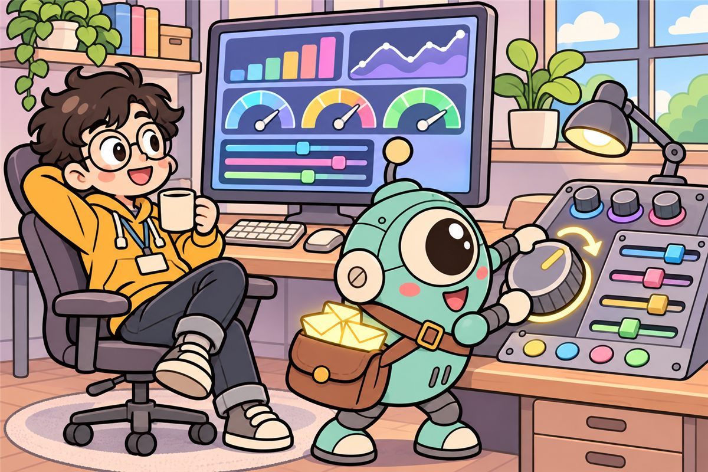
지우테스트하는 도중에 지연을 바꿀 수도 있어?
클럼지그럼! 브라우저로 http://127.0.0.1:8080을 열면 대시보드에서 슬라이더로 바로 바꿀 수 있어. 스크립트라면 REST API를 쓰고.
# 실행 중에 지연을 300ms로
curl -X POST http://127.0.0.1:8080/api/apply -H "Content-Type: application/json" -d "{\"lag\":true,\"lag-time\":300}"
# 지금까지 붙잡은 패킷 수, 실제로 더해진 지연(p50/p95/p99)
curl http://127.0.0.1:8080/api/stats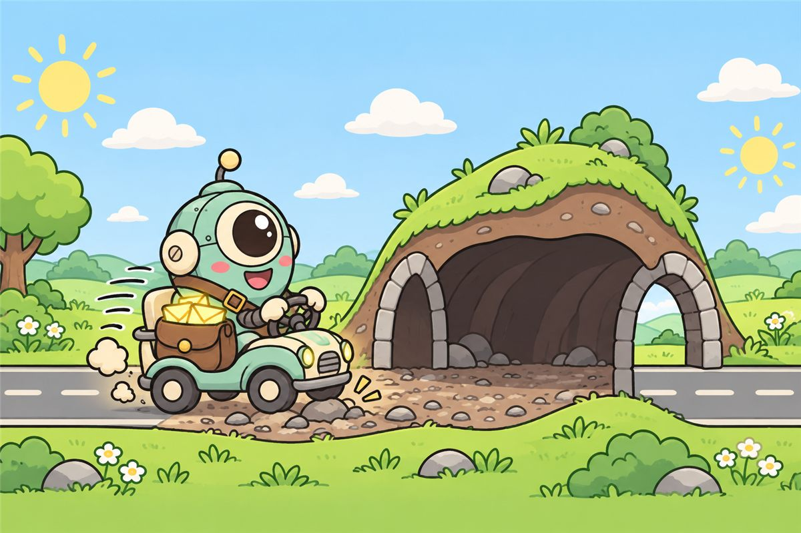
시간에 따라 조건이 바뀌는 출근길 지하철도 재현할 수 있다. 이것을 시나리오라고 부른다.
[
{"at": 0, "lag": true, "lag-time": 80},
{"at": 20, "drop": true, "drop-chance": 5},
{"at": 40, "blackout": true, "blackout-duration": 3000, "blackout-gap": 20000},
{"at": 70, "lag": false, "drop": false, "blackout": false}
]클럼지이걸 commute.json으로 저장하고 --scenario commute.json을 붙이면 돼. 처음엔 살짝 느리다가, 20초에 손실이 생기고, 40초부터는 20초 달리고 3초 터널에 들어가기를 반복하다가, 70초에 모두 원래대로 돌아와.
클라이언트가 여럿이라면
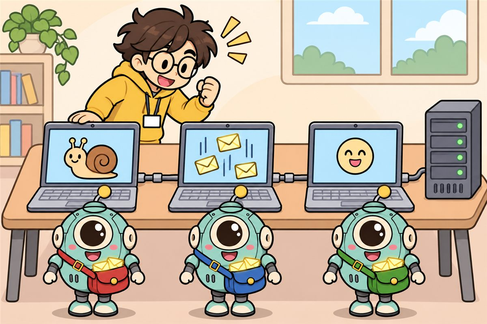
지우PC 한 대에 클라이언트를 여러 개 띄워서 테스트하는데, 하나는 느리게, 하나는 손실 많게, 하나는 멀쩡하게 하고 싶어.
클럼지조건마다 나를 하나씩 띄워! 대신 각자 웹 포트와 파이프 이름은 다르게 줘야 해.
# 클라이언트 A(로컬 포트 50001)는 느리게
clumsy.exe --web-port 8081 --pipe-name client1 --lag on --lag-time 150 --timeout 600 ^
--filter "(udp.SrcPort == 50001 and udp.DstPort == 7777) or (udp.SrcPort == 7777 and udp.DstPort == 50001)"
# 클라이언트 B(로컬 포트 50002)는 손실 많게
clumsy.exe --web-port 8082 --pipe-name client2 --drop on --drop-chance 30 --timeout 600 ^
--filter "(udp.SrcPort == 50002 and udp.DstPort == 7777) or (udp.SrcPort == 7777 and udp.DstPort == 50002)"- 모든 클라이언트에 같은 조건이면 clumsy 하나에
udp.DstPort == 7777 or udp.SrcPort == 7777처럼 주면 충분합니다. - 서버가 같은 PC에 있든 다른 PC에 있든 방법은 같습니다. clumsy는 클라이언트가 있는 PC에서 실행합니다.
- 클라이언트의 로컬 포트는 접속한 뒤 PowerShell의
Get-NetUDPEndpoint -OwningProcess <PID>로 확인합니다. - 리눅스에서는
--queue-num도 인스턴스마다 다르게 줍니다.
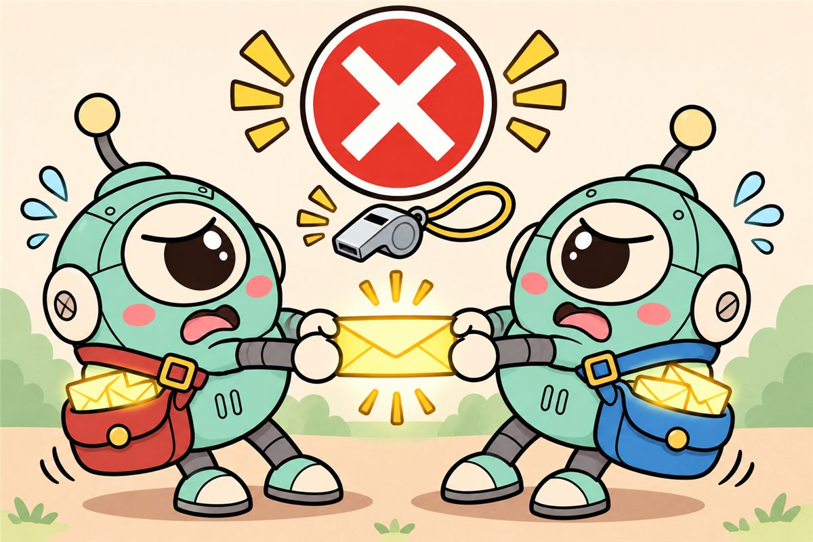
클럼지 (빨강)이 편지는 내 거야!
클럼지 (파랑)아냐, 내 필터에도 걸렸다고!
두 인스턴스의 필터가 같은 패킷을 노리면, 먼저 본 쪽만 조건을 적용하고 다른 쪽은 아무 표시 없이 놓친다. 그래서 clumsy는 겹칠 수 있는 필터로는 아예 시작하지 않는다.
명령줄에서는 종료 코드 4, REST API(POST /api/filter)에서는 HTTP 409로 거부되고,
메시지가 상대 인스턴스(PID, 웹 주소, 파이프)와 양쪽에 모두 걸리는 예시 패킷을 알려줍니다.
filter overlaps the clumsy with pid 4120 (web http://127.0.0.1:8081/, pipe \\.\pipe\client1)
capturing "...": both would match udp, src port 50001, dst port 7777. ...클라이언트 포트만 적으면(udp.SrcPort == 50001 or udp.DstPort == 50001) 50001에서 50002로 가는 패킷도
걸리므로 겹친다고 판정됩니다. 위처럼 클라이언트 포트와 서버 포트를 짝으로 적으세요.
AI에게 맡기기
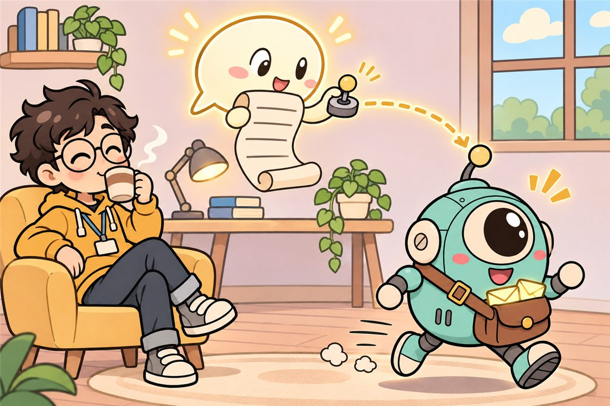
지우이 테스트, AI 에이전트한테 통째로 시켜도 돼?
클럼지물론! 나는 AI 에이전트가 쉽게 다룰 수 있게 만들어졌어. 에이전트는 llms_kr.txt를 읽고 나를 조종해.
이렇게 부탁해 보세요
clumsy를 백그라운드로 띄우고 REST API로 제어해줘.
먼저 http://127.0.0.1:8080/llms_kr.txt를 읽어.
대상은 10.0.0.5의 TCP 443 포트야. 지연 100ms로 시작해서 20초마다
패킷 손실을 2%씩 올리고, 내 클라이언트의 재접속 로직이 언제 동작하는지 알려줘.
끝나면 clumsy를 종료해.clumsy --help: 모든 옵션과 모듈 파라미터의 범위·기본값 (코드에서 자동 생성)GET /api/docs: 모든 REST 엔드포인트와 예시 본문- 잘못된 옵션은 조용히 무시하지 않고 올바른 이름을 알려준 뒤 종료합니다(종료 코드 2).
에이전트용 가이드 원본은 저장소 루트의 llms_kr.txt(영문 llms.txt)입니다.
에필로그
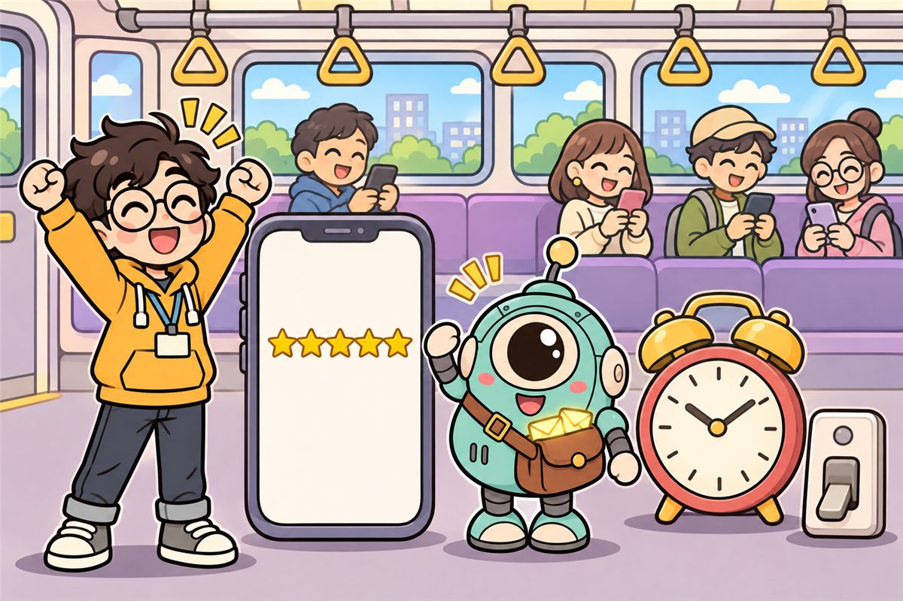
책상 위에서 나쁜 네트워크를 미리 겪어 본 덕분에, 다음 업데이트는 지하철에서도 엘리베이터에서도 버텼다.
지우고마워, 클럼지! 덕분에 별 다섯 개야!
클럼지헤헤. 테스트가 끝나면 나를 꼭 꺼 줘! 콘솔에서 Ctrl+C, 아니면 POST /api/quit.
클럼지의 한 장 요약
- 관리자 권한으로 실행합니다. (Linux는
sudo와--auto-iptables on) - 필터는 좁게. 테스트할 앱의 포트나 주소만 고릅니다.
- 모듈은 켜고 값을 줍니다.
--lag on --lag-time 150 --timeout을 항상 붙여 안전벨트를 맵니다.- 조건이 다른 클라이언트는 인스턴스를 나누고, 웹 포트·파이프 이름을 다르게 줍니다.
- 끝나면 꼭 끕니다. 그래야 네트워크가 정상으로 돌아옵니다.
더 알아보기: 초보자 가이드 · 사용 매뉴얼 · README · AI 에이전트용 가이드
— 끝 —